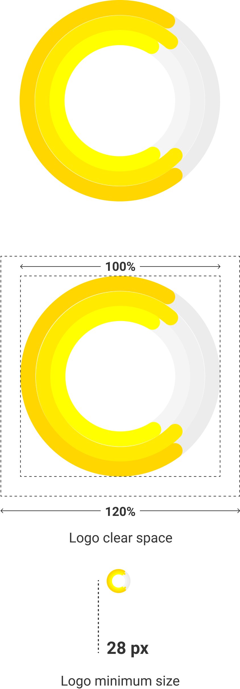
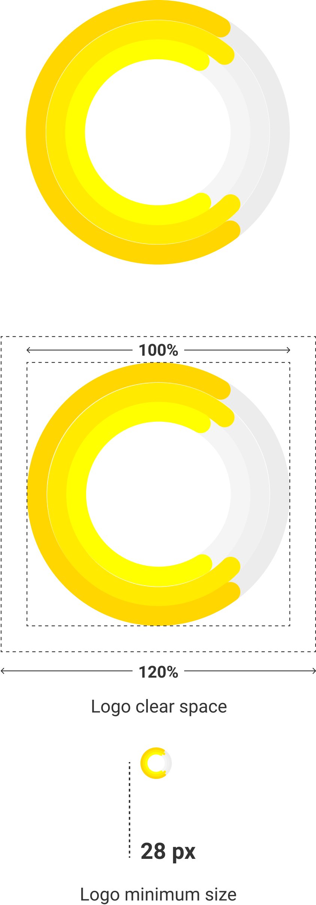

case study
Cheddr
A personal budget manager that tracks your expenses and incomes and gives you recommendations to make you financially fit.
-
Type
Mobile app
-
Platform
Android OS
-
Category
Finance
01
Summary
A personal budget is a framework of how you spend and save your money. It's meant to track and manage an individual's finances, allowing him or her to allocate income towards expenses, savings, and debt repayments. Its purpose is to provide a better understanding of where your money is spent.
Cheddr wants to enhance the overall personal finance landscape, as well as redefine your spending habits to build your savings.
Deliverables
- UX Intensive
- Surveys
- User Research
- User Personas
- Competitive Analysis
- User Stories
- User Flows
- Wireframes
- Low-fi Mockups
- UI Intensive
- Hi-fidelity Mockups
- Logo Design
- Color Palette
- Typography
- Style Guide
- Interactive Prototype
- Preference Tests
- Usability Tests
Tools Used
- Figma
- Adobe Illustrator
- Adobe Photoshop
- Balsamiq
- InVision
- Marvel
- Maze
- UsabilityHub
- Typeform
- Grammarly
02
The Challenge
The development of your personal budget is no easy task to complete. In fact, the ability to control money coming in versus going out is a major obstacle among individuals today. Furthermore, very few have the discipline and diligence to stick with it, as it takes a relentless dedication to achieve a competent personal budget. The good news, however, is that it can now be done with relative ease.
03
Solution
After completing my research and considering the changing Indian financial landscape, I decided to build an Android mobile app with the ability to track all your accounts digitally and in real time. Besides, I have added some extra features to make the idea of money management sound fun and exciting to the millennials, which are my target audience.
04
The Design Process
01
Discovery
The idea of personal budget management appears very significant to me personally since I am from the millennial generation. So, I have grown up believing that success means living in the moment and experiencing new things and that goes without saying that millennials tend to spend a lot at a very young age. It's difficult for us to live by the old convention of planning and saving for our future, or buying our own house and having sufficient funds after retirement. That said, it's equally important to consider the growing issue of having financial freedom early in one's life as a measure of success.
Almost everyone today mainly uses their phones to stay connected with their loved ones through social media, and some of them even use it for banking and making payments on-the-go. With the advent of tougher security protocols and the ease of doing everything on your fingertips, I believe that a powerful digital budget manager is a must-have app for everyone, especially the millennials, to be responsible for how they use their money.
I live in India and since the past year, the financial landscape over here has seen a dramatic change. People are preferring to pay digitally and accessing their accounts through the individual bank apps and net-banking.
But, there is a definite need for a budget manager that syncs across all the user's bank accounts and where the user can check his or her account activity on the go and in real time, all inside one single app.
02
User Research & Competitive Analysis
User surveys
The first step was to conduct a survey and find about the potential needs and understanding of the people, determine their pain points and craft a solution around it. The user survey pointed out some key characteristics in the way most people keep a track of their money.
Keeping track of your money
-
84
responses captured
-
49%
Net Banking
-
25%
Bank statement
-
13%
Expense Manager app
-
37%
Mobile Banking
-
19%
Print passbook
-
4%
Other
View full summary & analysis of responses
View AllUser Personas
Based on the survey respondents, I interviewed a handful of people to know more about them and their attitude towards money management. I made a note of their spend areas, the frequency of their spends, what a typical weekday/ weekend in their lives looked like, what steps they were willing to take in order to achieve their financial goals, etc. I created three user personas to summarize their goals, needs and their competency level with the technology.
-
Set Goals; Save More
-
KENNY S.
- 23 yo, Software Consultant
Pune, India
STORY
-
Kenny is an IT engineer working as a software consultant in a major Bank in Pune, India. He lives in a rented apartment along with two of his co-workers. He splits the house rent, groceries, electricity bills, common household expenses with two of his room-mates. His other expenses include paying for cellular usage, food & drinks, commuting and sometimes gas. He prefers to pay by Debit card or other digital payment apps. Kenny also uses Expense manager apps and his biggest frustration is having to remember every detail about cash transactions and enter them into the app.
GOALS
- • Track expenses and income sources
- • Weekly summary of top spends
- • Set budget limit in popular expenses
NEEDS
- • Should be able to view and examine each Txn details from all synced accounts, cards and wallets
- • Give me warnings and reminders about overspends and bill dues
- • Plan my budget according to my financial performance over a set period of time
Would like to have an app that makes the task of manually entering details of cash TXN seamless and fun.
-
Accurately track my expenses; Be more aware
-
SHIRLEY
- 23 yo, Photographer
Mumbai, India
STORY
-
Shirley is a photographer who has studied Commercial Arts from Mumbai. Her common expenses include commuting to and from the city, food & drinks, paying bills and online shopping. She prefers paying it with her debit card/ digital payment wallets wherever possible. She does bi-weekly modest cash ATM withdrawals to spend on trivial household items/ transport. Shirley keeps track of her money by logging in to her bank mobile app and sometimes NEFT. She keeps a rough estimate about her weekly or monthly spends but often forgets in the daily hustle. She would also like to have the information displayed in an easier way besides the graphs. Daily reminders about how much she should spend would be very helpful.
GOALS
- • Eliminate unnecessary expenses
- • Daily reminders of goal progress, expense summaries etc.
- • Display expense reports in a simpler format
NEEDS
- • Should be able to view and examine each Txn details from all synced accounts, cards and wallets
- • Give me warnings and reminders about overspends and bill dues
- • Make me more conscious about saving my money and assess my spending habits
If I can accurately track my expenses and be aware about my spending habits, then I will become more financially fit.
View all User Personas
View AllCompetitive Analysis
The next strategic step was to study the existing personal budget manage- ment apps and conduct a SWOT analysis of these competitors. The competitive analysis suggested that security and usability were two major concerns. Besides, a pleasing UI was also needed to maintain user retention.
MoneyView
Walnut

Money Lover
- Does not gain access to your personal SMS, bank OTP, passwords or account numbers
- Bank grade security & encryption
- Large database of partner banks & integration of popular digital payments app
- Information displayed in a simplified way for users who cannot understand graphs & donut charts
- Real-time tracking & fully digital budget management
View full Competitive Analysis
View All03
Information Architecture
The next step in the design process was to organize everything and give a structure to the app. This is known as Information architecture. I started by defining the minimum requirements or deliverables for the app by drafting the User Stories....identify my major/ popular expense areas, give me recommendations to improve my spending habits, set budget goals, make the experience of adding cash spends delightful etc...
I made User Flows and Sitemap to define the app Navigation and its structure followed by Wireframes and Low-fi mockups.
User Flows and Sitemap
View All Userflows
View AllWireframes & Low-fidelity Mockups

04
Visual Design and Brand Identity
This is the most exciting part of the design process. This is also the most comprehensive and crucial project stage as it involves designing detailed mockups of the app, designing the logo, choosing an appropriate color scheme and setting up the style guide to position the brand's presence.
High-fidelity Mockups
Following the framework established in the low-fidelity mockups, I made the High-Fidelity mockups which presented a detailed view of all the possible screens in the app. It was the most time-consuming task as it involved choosing the appropriate colors, icons, typefaces, font weights and designing the graphs. Besides, the whole app is consistent with the Google Material Design guidelines.
Logo Design
Next up was designing the logo for Cheddr app. The below visuals explain the logo designing process.


The name Cheddr is derived from Cheddar, which is a type of cheese. Cheese, or Cheddar as they often call it, are popular slang terms used to describe money. The main call-to-action button on the Welcome screen of the app reads “More Cheddr”. It’s very catchy and assures the user in a very subtle way about having ‘more money’ (by managing it through Cheddr).
 

The Cheddr logo has a very modern appeal to it and conveys the user that the information inside the app would be represented in the form of donut charts. Besides, it reads the letter “C” while eyeballing it.
The colors used in the creation of logo are different shades of Yellow inspired by cheddar which comes in similar shades.
Color Palette
Since this is a financial app, it consists of a lot of data elements. Hence, a deep color palette was necessary to convey important actions & information by associating them with color hierarchy.


Our Typeface
The Typeface for the app had to make for a more natural reading rhythm and appropriately suited for our finance app because the information being conveyed has to be legible and rightly formatted. I chose Roboto as it is the standard typeface used in Designing for Android using the Google Material Design guidelines.
UI Elements
The other components that make the app include icon sets, buttons and switches and different types of Debit Card color variants, data cards, graphs and forms. I have put together these resources under the category of UI Elements.


Brand Uniqueness
Let's talk about Brand Uniqueness. I was faced with two major concerns, one about the way data is displayed inside the app (the graphs & donut charts) and second, to improve the experience of adding a Cash expenditure.
According to my survey, some of the potential users wanted a simpler interface which displayed all the important information related to the user's linked bank accounts and they wouldn't have to dive deep within the app to fetch it. I came up with a solution which I call "Stories" that are generated by the app itself and gives quick information about the user's account balance, warnings about overspends, recommendations, bill reminders, and latest transactions. It received some good positive feedback and felt like a must-have feature for apps other than social media.
Stories

The existing budget manager apps allowed adding cash expenditures by entering details inside a form that didn't have a great UI. Also, several users complained about having to recollect details about their cash spends and then add to the expenses. This process had to be sped up and improvised. I came up with a very simple idea of taking a snap-shot of the item in the transaction and like any social media app, enter the amount as the caption. You can also add a location, but it can be ignored as the app fetches your location from the GPS and date & time of the TXN from the device time.
Add a Cash spend

This wraps up the Visual Design and Brand Identity phase.
The complete guide Style Guide with more details can be found here:
View complete Cheddr Style Guide
View All05
Development
Preference Tests
As part of User Testing, I ran 2 preference tests on what design suits the best for the app Dashboard.
There were 3 versions of the dashboard design.
1. White Dashboard design
2. Black Data Cards on white background
3. Black Dashboard design
- In the first preference test, the testers were presented with 2 images, one being a White Dashboard and the other, Black data cards on white background.
- The black on white dashboard design performed better than the white dashboard. The users found the contrast better in the dark UI.
Going further with my take on this, the black data cards on a lighter (white) background, did not align with the Android material design guidelines. Besides, it affected the color consistency of the whole app.
- In the second preference test, the testers were presented with the completed dashboard design in both Light & Dark UI and asked to choose the preferred one.
- In this test, the Light UI performed better than the Dark UI. The testers found that text on a lighter UI is more legible than the darker UI. There's less eye tension and it's prettier than the Dark UI overall.
- Besides, it's more consistent with the Android Material Design.
With due consideration of all facts, I chose to go ahead with making everything in a light UI. One would debate that there should be an option to switch to Dark UI. Well, that can be looked as a nice-to-have-feature but right now, it was not required to be a part of the MVP.
Final Prototype and Usability Tests
The final stage was to develop an Interactive prototype of the app.
Since the whole prototype contained a lot of screens and there were so many important tasks a user could perform within the app, I developed 3 Mazes in the Maze app where the user is asked to perform certain tasks (missions) and solve the maze.
- Maze 1 was about the user performing the main tasks for which the app is made. This includes New-user Sign Up, Viewing your weekly, monthly expenses & adding a new card.
- The testers loved the app UI a lot and found it easy to understand the tasks (solve the maze).
- However, one of the testers initially confused the "+" button in the title bar for adding a new card. For adding a new card, the user has to swipe left across the card carousel. The "+" button is for adding a cash expense and as a frequent user of the app, you would not add a new card so often but it's likely you would add a cash expense more often. Hence there were no modifications made in the design.
- Maze 2 was about the user performing some secondary tasks like adding a cash expense, adding a Bill Reminder & Viewing Stories.
- One of the testers found it unclear as it was not exactly solving a maze but more of clicking through to reach the end of the maze. I agree with the tester but I designed these tasks to offer a look at the additional features contained within the app as the whole prototype was too big to understand.
- As opposed to this, one of the testers really loved the whole idea of Stories as a feature within the app. It was a pretty simple way to get a brief overview of your account and stay updated all time. Although, the tester struggled with the Add a cash expense task as the buttons were hidden because of the resolution issue (content overflow).
- Maze 3 was about further breaking down to see the navigation within the app. It has tasks, where the user has to , set an expense limit, reset the password, view all transactions & explore various options in the Nav Drawer and eventually log out of the app.
- Some testers found it vague and hence I did not receive enough feedback on this. I was expecting this. I learned that not everything should be put out to test. This was a great feedback in itself.
05
Conclusion
This is by far the most UX/UI intensive project I have undertaken. I have spent 3 months working on this project starting from brainstorming to deploying the final prototype and finally making an account of every step in this case study.
I have a lot to say regarding this project as I have left no stones unturned when it came to putting in the best of my efforts at each stage of this project. That said, mistakes are made even when you go all in. The most obvious mistake was going for a minimum Screen Resolution of 2:1 (18:9) aspect ratio. I was following the current trend of Android smartphone screen sizes only to later realize that all the prototyping tools (InVision, Marvel, Maze etc.) did not provide any template for such big phones. The standard was still 16:9 screen sizes ie. 360 x 640 p, whereas I made screens with a min res. of 360 x 720 p. This created a lot of confusion for users who participated in the Maze missions.
Besides, I could have listed fewer goals for the MVP of the app. I spent too much time designing the less important features and paying close attention to the detail, which is not hurtful but, it increases the volume of work.
Looking at the app as a whole, I am confident that the solutions I came up with, will definitely solve the problem that people face with existing money management apps or services.
And I hope to see our users becoming financially fit with Cheddr!
Project by
PANKHIL MISTRY
UX / UI Designer